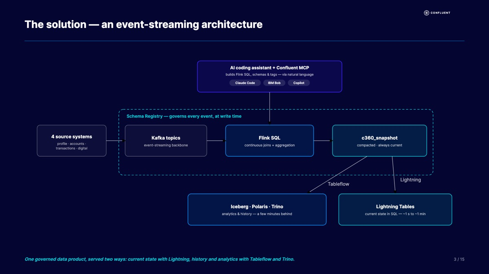
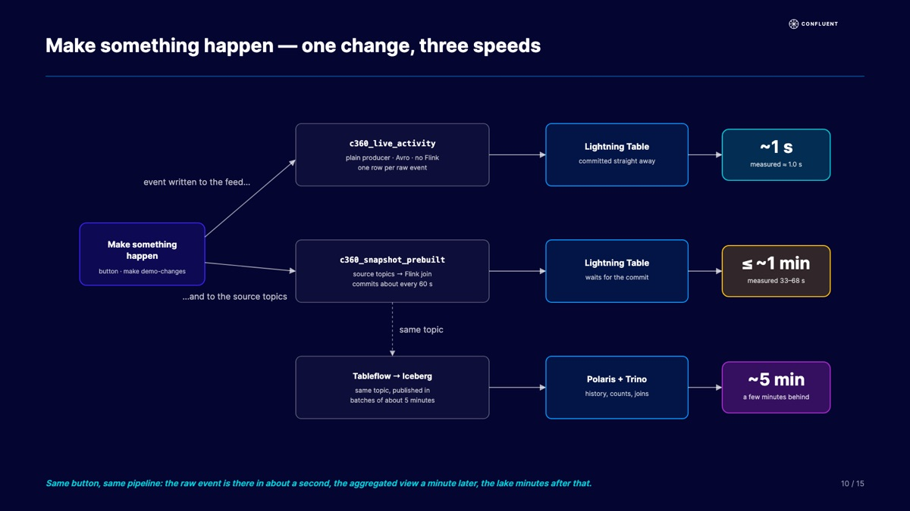
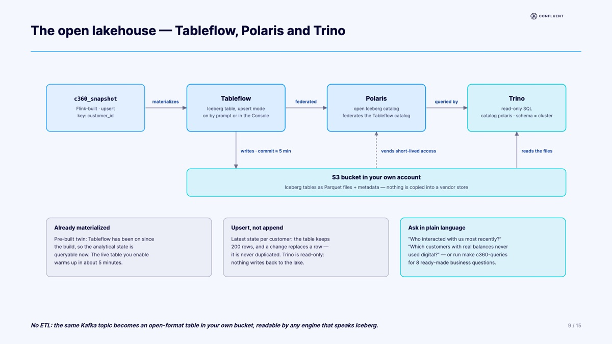
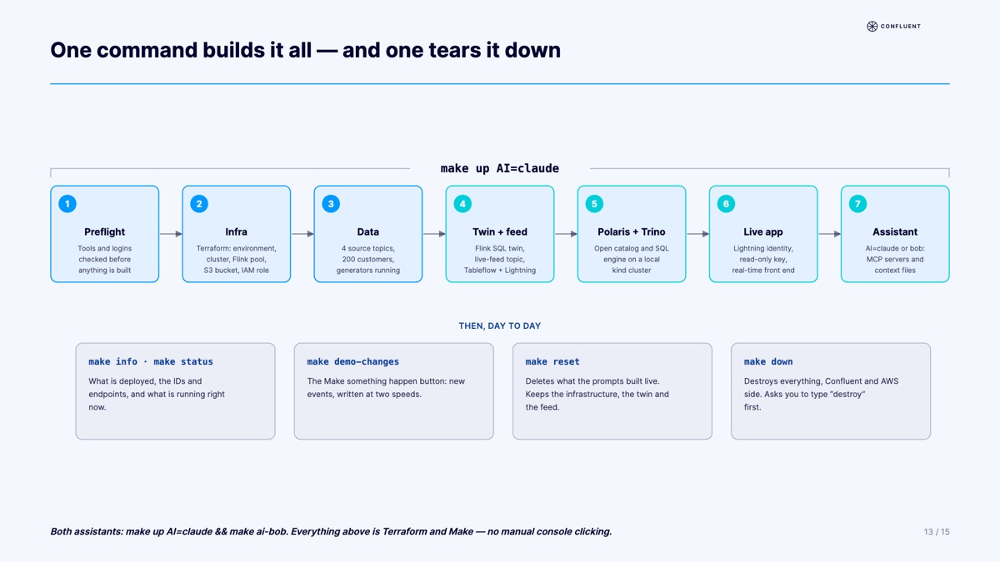

The business problem
A retail bank holds a customer's story in four systems, each updated on its own schedule. No team can answer a simple question without stitching them together.
The demo in five steps — and why each one matters
Each step shows a platform capability and the business value it unlocks.
-
Build it by prompting
An AI assistant connected to Confluent through MCP discovers the topics, enforces schemas, tags the data and writes the Flink SQL that joins four feeds into one Customer 360 table.
CapabilityKafka topics, Schema Registry, stream governance tags, Flink SQL, Confluent MCPBusiness valueA data product is built from a conversation, not a project — and it is governed from the first event, not retrofitted. -
Open it to analytics
Tableflow turns the topic into an Iceberg table in your own S3 bucket. Polaris and Trino answer business questions in SQL, such as which customers with real balances have never used digital channels.
CapabilityTableflow, Apache Iceberg, Polaris catalog, TrinoBusiness valueOne copy of the data in an open format that any engine can read. No ETL pipeline to build or run, and no lock-in on the analytical side. -
Make something happen
One click (or
make demo-changes) sends new digital sessions and card purchases for real customers, so the audience watches a change travel through the whole pipeline.CapabilityContinuous ingestion and continuous Flink processingBusiness valueThe customer view reflects what just happened — not what a nightly batch captured. -
See it in real time
Lightning Tables answer plain SQL on the current state of a topic — from the Console, a live front end, or by simply asking the assistant in natural language.
CapabilityLightning Tables, JDBC, theconfluent-rtceMCP serverBusiness valueApplications and AI agents get a current customer card with no database to run and no consumer to write. -
The analytical side catches up
Minutes later the same change is in the Iceberg table. The real-time answer and the historical answer come from one pipeline.
CapabilityTableflow commits, Polaris, TrinoBusiness valueOne data product serves operations and analytics at once, with no second pipeline to keep in sync.
One change, three speeds
The same event is visible at different times depending on what the question needs. Figures are measured on this demo.
A plain producer feeds a live-activity table. “What just happened?”
Flink joins four sources and commits about once a minute. “Who is this customer?”
Tableflow publishes in batches. “How many… and how has it changed?”
Platform capabilities and the value they add
Data streaming
Every source becomes a durable, replayable stream. New consumers can join later without touching the producers.
Governance by default
Schemas are enforced at write time and topics are classified up front, so downstream teams can trust what they consume.
Stream processing
Joins and aggregations run continuously, so the Customer 360 stays current without batch windows or custom code.
Open lakehouse
Streams materialize as open tables in your own storage, readable by the engines you already use.
Real-time serving
Low-latency SQL on current state for apps and agents — without standing up and syncing a serving database.
AI-assisted delivery
The build and the questions run in plain language. Same prompts, your choice of assistant.
What it adds up to
make up, builds the whole environment; make down removes it.From the slides
The full session recap, with the data contracts and the architecture, is one click away.

Architecture — one governed data product, served two ways
One change, three speeds
The open lakehouse
One command builds it allSlides: use the arrow keys or click to move; works best on a desktop screen.